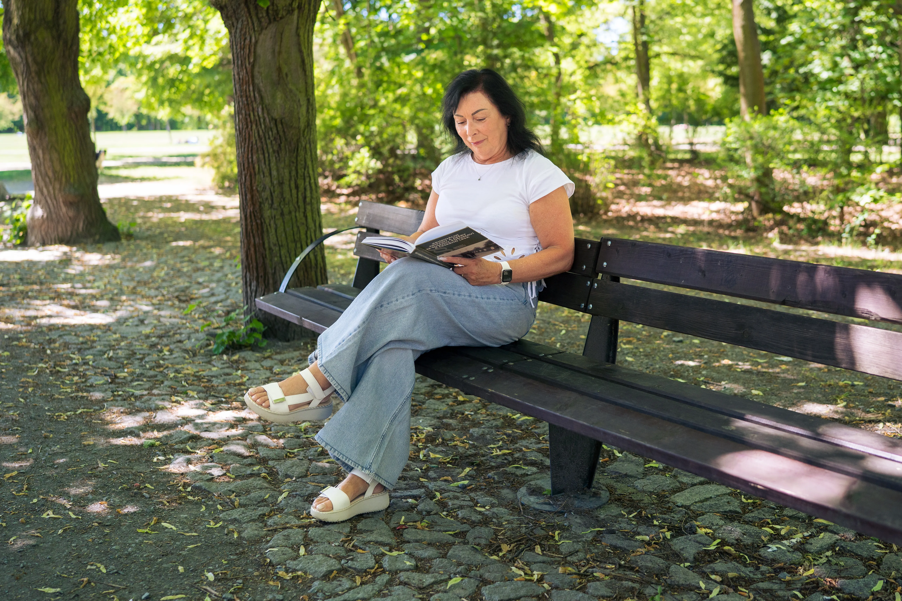
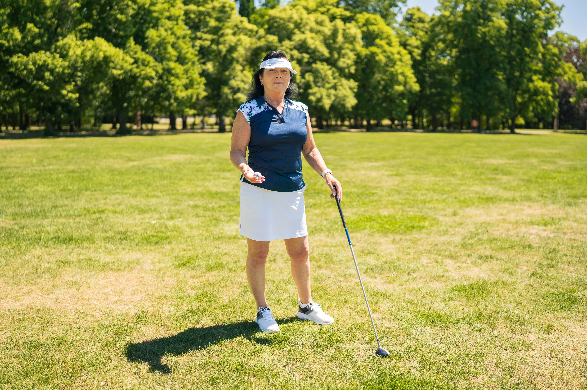
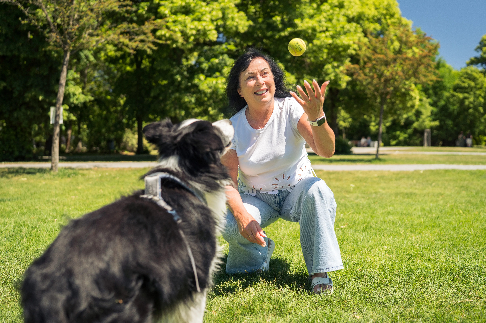
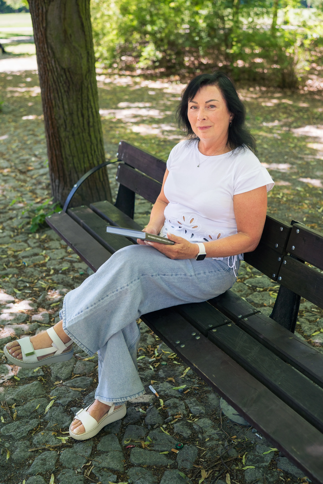
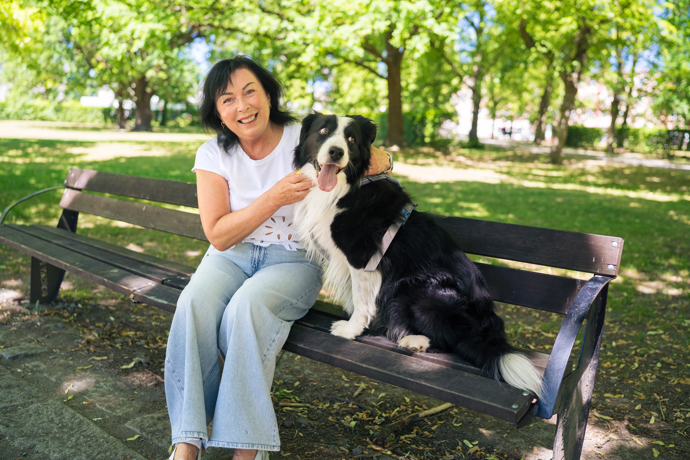

Motto: Vždy chci pomáhat tam, kde mám znalosti, zkušenosti a kde mohu být užitečná.



Svoji lékařskou praxi jsem zahájila v letech 1986–1989 v Rokycanské nemocnici jako dětská lékařka. Následně jsem působila ve Fakultní nemocnici Plzeň, kde jsem pracovala v letech 1990–1994. Od roku 1994 působím v soukromé nemocnici U Sv. Jiří v Plzni, kde zastávám funkci primářky pediatrického oddělení.
Ve své odborné praxi se dlouhodobě zaměřuji především na respirační onemocnění u dětí a akutní medicínu. Současně pracuji také jako odborný zástupce nemocnice a své zkušenosti předávám budoucím zdravotníkům při výuce ošetřovatelství v pediatrii na Západočeské univerzitě v Plzni.

Do Senátu kandiduji s přesvědčením, že zkušenosti z dlouholeté lékařské praxe mohou být přínosem i pro veřejný život. Věřím, že pomoc má smysl tam, kde člověk může uplatnit své znalosti, zkušenosti a být skutečně prospěšný druhým.
V životě se řídím jednoduchým krédem – pomáhat tam, kde mám znalosti, zkušenosti a kde mohu být užitečná. Proto se chci i nadále věnovat především oblasti zdravotní a sociální péče.
Velmi důležité je pro mě zdraví dětí a jejich harmonický vývoj. Každé dítě by mělo mít možnost vyrůstat v bezpečném prostředí, mít dostupnou kvalitní zdravotní péči a podporu pro svůj zdravý rozvoj.
Stejně tak mi záleží na seniorech a zachování jejich důstojnosti. Senioři si zaslouží respekt, kvalitní péči a podmínky pro důstojný život.
Opomíjet bychom neměli ani lidi bez domova. I oni jsou součástí naší společnosti a často potřebují nejen pomoc, ale také motivaci a podporu, aby mohli znovu převzít odpovědnost za svůj život a stát se plnohodnotnými a svéprávnými občany.
